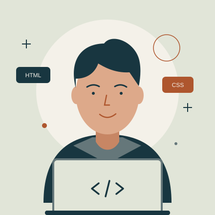

MINHA IDENTIDADE NA WEB
Olá, eu sou
Alan França.
Curiosidade no caminho.
Código na prática.
Este é meu espaço para reunir aprendizados, compartilhar interesses e dar forma às ideias que quero construir na web.
Uma página pessoal. Muitos caminhos para descobrir.

01 / SOBRE MIM
Um começo cheio
de possibilidades.
Estou aprendendo a transformar ideias em páginas que as pessoas possam visitar, ler e explorar. Nesta etapa do curso de front-end, meu foco é entender a estrutura do HTML e como cada elemento ajuda a organizar uma história.
Gosto da conexão entre tecnologia e criatividade: começar com uma ideia, experimentar soluções e observar o resultado no navegador. Esta página registra esse processo, incluindo o que estou praticando e os próximos passos que quero dar.
“Uma ideia ganha forma quando a gente começa.”
02 / INTERESSES E OBJETIVOS
O que me inspira.
O que quero aprender.
CURIOSIDADES QUE MOVEM
Meus interesses
- Desenvolvimento webEntender como uma ideia se transforma em uma página.
- Ficção científica e Star WarsExplorar histórias, mundos e possibilidades.
- Design de interfacesCombinar organização, identidade e facilidade de leitura.
PEQUENOS PASSOS, NOVAS DESCOBERTAS
Objetivos de aprendizagem
- Escrever HTML com significadoUsar títulos, seções, links e imagens de forma acessível.
- Dar identidade às páginasPraticar cores, tipografia, espaçamento e CSS responsivo.
- Construir um projeto completoConectar páginas, revisar caminhos e testar no navegador.
03 / ESTUDOS EM ANDAMENTO
Meu mapa de aprendizagem.
| Tema | Conhecimento atual | Próximo passo |
|---|---|---|
| HTML5 | Prática de títulos, links, listas e estrutura. | Aprimorar a semântica e conectar duas páginas. |
| CSS3 | Prática de cores, fontes, bordas e espaçamentos. | Adaptar a apresentação a diferentes telas. |
| Acessibilidade | Prática de textos alternativos e rótulos nos campos. | Revisar o contraste e a navegação por teclado. |
04 / MÍDIA E CONTATO
Ideias ficam melhores
quando são compartilhadas.
Uma pergunta, uma indicação ou uma ideia de projeto: este espaço demonstra como organizar uma mensagem com os elementos de formulário do HTML.
Ouça a trilha do meu universoA reprodução é manual. O áudio está incluído no projeto.